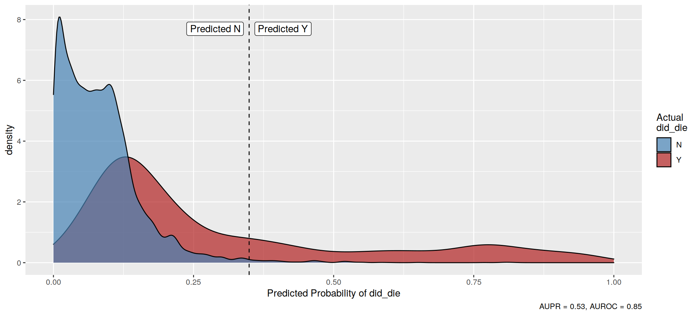

Tutorial 6 - Machine Learning
Last updated: 2020-06-04
Checks: 6 1
Knit directory: tutorials_workflowr/
This reproducible R Markdown analysis was created with workflowr (version 1.6.2). The Checks tab describes the reproducibility checks that were applied when the results were created. The Past versions tab lists the development history.
Great! Since the R Markdown file has been committed to the Git repository, you know the exact version of the code that produced these results.
Great job! The global environment was empty. Objects defined in the global environment can affect the analysis in your R Markdown file in unknown ways. For reproduciblity it’s best to always run the code in an empty environment.
The command set.seed(20190513) was run prior to running the code in the R Markdown file. Setting a seed ensures that any results that rely on randomness, e.g. subsampling or permutations, are reproducible.
Nice! There were no cached chunks for this analysis, so you can be confident that you successfully produced the results during this run.
Great job! Using relative paths to the files within your workflowr project makes it easier to run your code on other machines.
Great! You are using Git for version control. Tracking code development and connecting the code version to the results is critical for reproducibility.
The results in this page were generated with repository version f245e3b. See the Past versions tab to see a history of the changes made to the R Markdown and HTML files.
Note that you need to be careful to ensure that all relevant files for the analysis have been committed to Git prior to generating the results (you can use wflow_publish or wflow_git_commit). workflowr only checks the R Markdown file, but you know if there are other scripts or data files that it depends on. Below is the status of the Git repository when the results were generated:
Ignored files:
Ignored: code/analysis/
Note that any generated files, e.g. HTML, png, CSS, etc., are not included in this status report because it is ok for generated content to have uncommitted changes.
These are the previous versions of the repository in which changes were made to the R Markdown (analysis/tutorial6.Rmd) and HTML (docs/tutorial6.html) files. If you’ve configured a remote Git repository (see ?wflow_git_remote), click on the hyperlinks in the table below to view the files as they were in that past version.
| File | Version | Author | Date | Message |
|---|---|---|---|---|
| Rmd | f245e3b | Dennis Wollersheim | 2020-06-04 | workflowr::wflow_publish(“analysis/tutorial6.Rmd”) |
| html | 968be0a | Dennis Wollersheim | 2020-05-21 | Build site. |
| html | 6cb36e8 | Dennis Wollersheim | 2020-05-20 | Build site. |
| html | 8bcc43d | Dennis Wollersheim | 2020-05-19 | Build site. |
| html | fa2931b | Dennis Wollersheim | 2019-06-06 | Build site. |
| html | 1b6004e | Dennis Wollersheim | 2019-06-05 | Build site. |
| Rmd | c7d72ee | Dennis Wollersheim | 2019-06-05 | wflow_publish(“analysis/tutorial6.Rmd”) |
| html | f7d9a99 | Dennis Wollersheim | 2019-06-03 | Build site. |
| Rmd | 8f0eafc | Dennis Wollersheim | 2019-06-03 | wflow_publish(“analysis/tutorial6.Rmd”) |
| Rmd | fb48094 | Dennis Wollersheim | 2019-05-31 | questions |
| html | 5408545 | Dennis Wollersheim | 2019-05-30 | Build site. |
| html | ef71d9e | Dennis Wollersheim | 2019-05-30 | Build site. |
| Rmd | e985e15 | Dennis Wollersheim | 2019-05-30 | wflow_publish(“analysis/tutorial6.Rmd”) |
| html | 1e87e06 | Dennis Wollersheim | 2019-05-30 | Build site. |
| Rmd | fc4e705 | Dennis Wollersheim | 2019-05-30 | wflow_publish(“analysis/tutorial6.Rmd”) |
| Rmd | eae8a20 | Dennis Wollersheim | 2019-05-29 | inprogress |
Machine Learning in R
The question: If you enter hospital with a PD of Pneumonia, what factors determine if you will survive?
Load Libraries
We will use a library called healthcareai, which is a conglomeration of many other machine learning libraries, mashed together in one beautiful package.
# load libraries
library(knitr)
opts_chunk$set(warning=F,message=F,fig.width = 11,fig.height = 5,cache=F, echo=T)
library(tidyverse)
library("RPostgreSQL")
library(healthcareai)Get data from SQL
# create connection to the database
con <- dbConnect(dbDriver("PostgreSQL"),
dbname = 'vaed_full',
host = "himsql7.latrobe.edu.au", port = 5432,
user = "dewollershei-test", password = "healthGuru")
#
# this is the query to get all tne pneumonia diagnois. Finding the 3 commented lines would also find the principal procedure, which might also
# might be useful in the model
query_diag <- "
select ad.position, diag_code, admission_id, age_years, los,
sameday_id, drg, sex_desc, diag_short_desc, sep_mode_desc, care_type_desc,
sep_mode_id
---, procedure_short_desc
from admission JOIN sex using (sex_id)
join admission_diagnosis ad using (admission_id)
join diagnosis_desc using (diag_code)
join admission_procedure ap USING (admission_id)
---join procedure_desc using (procedure_code)
JOIN separation_mode USING (sep_mode_id)
JOIN care_type USING (care_type_id)
WHERE diag_short_desc like 'Pneumonia unspecified'
---and ap.position=1
"
#
# run the query against the database connection setup earlier
pneumonia_diag <- dbGetQuery( con, query_diag ) %>%
as_tibble() %>%
mutate( diag_status = ifelse( position==1, 'Pdx','Adx'))
#
# disconnnect the database connection
did_disconnect <- dbDisconnect( con )Can we predict separation mode for pneumonia unspecified patients?
Given our 7517 pneumonia unspecified patients, can we predict their separation mode? First, what does separation mode look like?
pneumonia_diag %>%
ggplot( aes( sep_mode_desc, fill=diag_status)) +
geom_bar( ) +
coord_flip()
What is the frequency of each mode?
pneumonia_diag %>%
count( sep_mode_id, sep_mode_desc)# A tibble: 8 x 3
sep_mode_id sep_mode_desc n
<chr> <chr> <int>
1 A Separation and transfer to mental health residential facili… 9
2 B Separation and transfer to Transition Care bed based program 951
3 D Death 6468
4 H Separation to private residence/accommodation 33067
5 N Separation and transfer to aged care residential facility 3545
6 S Statistical Separation 4011
7 T Separation and transfer to acute hospital/extended care 13727
8 Z Left against medical advice 287About 10% of patients with this diagnosis die.
Data cleaning and manipulation
We create a new variable, did_die, which is ‘Y’ if they did die, and ‘N’ otherwise. We also exclude some columns that are not useful for predicting (admission_id, position, diag_code, diag_short_desc), and also, exclude columns that would make the prediction too easy (sep_mode_id and sep_mode_desc).
pneumonia_diag_did_die <-
pneumonia_diag %>%
mutate( did_die = ifelse( sep_mode_id=='D', 'Y', 'N')) %>%
select( -admission_id, -position, -diag_code, -diag_short_desc, -sep_mode_id, -sep_mode_desc )
pneumonia_diag_did_die %>%
count( did_die )# A tibble: 2 x 2
did_die n
<chr> <int>
1 N 55597
2 Y 6468Machine learning
Can we use machine learning to determine the likelihood of death, given other factors?
First, we split the dataset into train and test data. We will generate the machine learning model from the training set, and we then use the test set to see if our model is any good.
split_data <- split_train_test(d=pneumonia_diag_did_die, outcome=did_die, percent_train=.8, seed=101001)
summary(split_data) Length Class Mode
train 8 tbl_df list
test 8 tbl_df listTraining a prediction model
We train the model on the training subset, held in the train component of the split_data variable split_data$train.
The outcome variable is the one we are trying to predict, in this case, did_die. We also set tune=F so that the process finishes more quickly, but if you have time, setting tune=T will give you a more accurate model.
machine_learn( split_data$train, outcome=did_die, tune=F) %>%
{ . } -> models
modelsAlgorithms Trained: Random Forest, eXtreme Gradient Boosting, and glmnet
Model Name: did_die
Target: did_die
Class: Classification
Performance Metric: AUROC
Number of Observations: 49653
Number of Features: 18
Models Trained: 2020-06-04 08:11:22
Models have not been tuned. Performance estimated via 5-fold cross validation at fixed hyperparameter values.
Best model: eXtreme Gradient Boosting
AUPR = 0.52, AUROC = 0.84
User-selected hyperparameter values:
nrounds = 50
max_depth = 6
eta = 0.3
gamma = 0
colsample_bytree = 0.8
min_child_weight = 1
subsample = 0.7 machine_learn calculate many models, and has a contest to determine the best predictor. The 3 models types are Random Forest, eXtreme Gradient Boosting, and glmnet. The default model scoring criteria used is called AUROC, short for area under the ROC curve, and it shows that our model had a 84% success rate at predicting death, using the training set. The best model was the eXtreme Gradient Boosting model.
Evaluating the trained models
The final score is shown using the evaluate function
evaluate(models, all_models=TRUE)# A tibble: 3 x 3
model AUPR AUROC
<chr> <dbl> <dbl>
1 eXtreme Gradient Boosting 0.521 0.841
2 Random Forest 0.291 0.725
3 glmnet 0.229 0.697Visualising a prediction model
There are various ways to visualise the results. THe first is to look at what predictions would be made for the ‘held back’ training data. predict does this, by adding a columm with the predicted did_die value, called predicted_did_die. This contains the probability that this prediction will be Y.
predictions <-
predict(models, newdata=split_data$test, outcome_groups=T)
predictions# A tibble: 12,412 x 10
did_die predicted_did_d… predicted_group age_years los sameday_id drg
* <fct> <dbl> <fct> <int> <int> <chr> <chr>
1 N 0.00787 N 1 6 N E62A
2 Y 0.719 Y 61 35 N H06A
3 Y 0.719 Y 61 35 N H06A
4 Y 0.719 Y 61 35 N H06A
5 Y 0.719 Y 61 35 N H06A
6 Y 0.157 N 75 2 N E62A
7 Y 0.157 N 75 2 N E62A
8 Y 0.173 N 52 17 N G02A
9 N 0.0802 N 75 15 N G03A
10 N 0.0802 N 75 15 N G03A
# … with 12,402 more rows, and 3 more variables: sex_desc <chr>,
# care_type_desc <chr>, diag_status <chr>We can plot the predictions.
plot( predictions )
How does the model work?
We first look and see which variables are important in the model.
get_variable_importance(models) %>%
plot()
Age and LOS are the most important variables. Another way to explore the model is look at what happens to the prediction as you play around with the variables. explore does this. By default, it explores the effect of changing the two most important variables in the model, in this case, age_years and los.
explore(models) %>%
plot()
We can also explore what happens as we explore other combinations of variables, in this case, age and care_type_desc.
explore(models, vary=c('age_years', 'care_type_desc')) %>%
plot()
Exercises
- Extract another dataset, for example, number of procedures performed, and if the patient had physiotherapy. Does this selection of data improve the model?
- What is a plausible reason why a longer LOS leads to improved survival?
- If we had enough data, we could predict ICD codes. What would the effect of this on the hospital workforce?
Multiclass prediction
The following code selects out the top 3 seperation modes, and excludes the other seperation modes. See if you can predict one of 3 seperation modes. Does that improve accuracy?
top3 <-
pneumonia_diag %>%
count( sep_mode_id, sep_mode_desc, sort=TRUE) %>%
head(3)
pneumonia_diag_top3 <-
pneumonia_diag %>%
inner_join( top3 ) %>%
select( -position, -diag_code, -diag_short_desc, -sep_mode_desc, -n )
split_data <- split_train_test(d=pneumonia_diag_top3 , outcome=sep_mode_id, percent_train=.8, seed=101001)
machine_learn( split_data$train, admission_id, outcome=sep_mode_id, tune=F) %>%
{ . } -> models
modelsAlgorithms Trained: Random Forest, eXtreme Gradient Boosting, and glmnet
Model Name: sep_mode_id
Target: sep_mode_id
Class: Multiclass
Performance Metric: Accuracy
Number of Observations: 42611
Number of Features: 18
Number of Outcome Classes: 3
Models Trained: 2020-06-04 08:12:51
Models have not been tuned. Performance estimated via 5-fold cross validation at fixed hyperparameter values.
Best model: eXtreme Gradient Boosting
Accuracy = 0.72, Kappa = 0.41
User-selected hyperparameter values:
nrounds = 50
max_depth = 6
eta = 0.3
gamma = 0
colsample_bytree = 0.8
min_child_weight = 1
subsample = 0.7 get_variable_importance(models) %>%
plot()